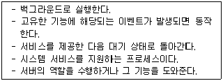
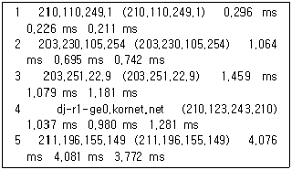
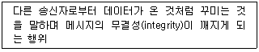

네트워크관리사-1급 (2015-10-18 기출문제)
1과목: TCP/IP
1. 브로드캐스트(Broadcast)에 대한 설명 중 올바른 것은?
- 어떤 특정 네트워크에 속한 모든 노드에 대하여 데이터 수신을 지시할 때 사용한다.
- 단일 호스트에 할당이 가능하다.
- 서브네트워크로 분할할 때 이용된다.
- 호스트의 Bit가 전부 '0'일 경우이다.
(정답률: 64%)

2. 네트워크 관리를 위한 프로토콜이 아닌 것은?
- CMIP
- SNMP
- SMTP
- CMIS
(정답률: 67%)
3. 다음 프로토콜 중 TCP/IP 계층 모델로 보았을 때, 나머지와 다른 계층에서 동작하는 것은?
- IP
- ARP
- RARP
- UDP
(정답률: 67%)
4. TFTP에 대한 설명 중 옳지 않은 것은?
- 시작지 호스트는 잘 받았다는 통지 메시지가 올 때까지 버퍼에 저장한다.
- 중요도는 떨어지지만 신속한 전송이 요구되는 파일 전송에 효과적이다.
- 모든 데이터는 512바이트로 된 고정된 길이의 패킷으로 되어 있다.
- 보호등급을 추가하여 데이터 스트림의 위아래로 TCP 체크섬이 있게 한다.
(정답률: 35%)
5. TCP/IP에 대한 설명으로 옳지 않은 것은?
- TCP는 전송 및 에러검출을 담당한다.
- IP 패킷에는 크기의 제한이 있다.
- TCP는 한 번에 많은 상대에게 데이터를 전달하고자 할 때 사용된다.
- IP는 패킷을 유실 또는 왜곡시키기도 한다.
(정답률: 50%)
6. ICMP의 기능으로 옳지 않은 것은?
- 에러 보고 기능
- 도착 가능 검사 기능
- 혼잡 제어 기능
- 송신측 경로 변경 기능
(정답률: 60%)
7. C Class인 IP Address는?
- 191.234.56.34
- 125.76.133.234
- 131.15.45.120
- 192.168.17.34
(정답률: 75%)
8. ARP의 기능에 대한 설명 중 옳지 않은 것은?
- 모든 호스트가 성공적으로 통신하기 위해서 각 하드웨어의 물리적인 주소문제를 해결하기 위해 사용된다.
- 목적지 호스트의 IP Address를 MAC Address로 바꾸는 역할을 하며, 목적지 호스트가 시작지의 IP Address를 MAC Address로 바꾸는 것을 보장한다.
- 기본적으로 ARP 캐시(Cache)를 사용하지 않으며, 매번 서버와 통신할 때 마다 MAC Address를 요구한다.
- ARP 캐시(Cache)는 MAC Address와 IP Address의 리스트를 저장한다.
(정답률: 66%)
9. Internet Layer를 구성하는 프로토콜들의 헤더에 대한 설명으로 옳지 않은 것은?
- IP 헤더의 TTP 필드는 Looping에 의해 패킷이 영구히 떠도는 것을 방지하기 위한 필드이다.
- IP 헤더의 프로토콜 필드는 상위 계층의 프로토콜을 식별하기 위해 사용되는 필드이다.
- ICMP Echo Request 패킷의 Type, Code는 각각 '0', '0' 이다.
- ARP Request 패킷의 목적지 MAC Address는 브로드 캐스트인 'FF-FF-FF-FF-FF-FF' 이다.
(정답률: 60%)
10. UDP에 대한 설명 중 옳지 않은 것은?
- 가상선로 개념이 없는 비연결형 프로토콜이다.
- TCP보다 전송속도가 느리다.
- 각 사용자는 16비트의 포트번호를 할당받는다.
- 데이터전송이 블록 단위이다.
(정답률: 73%)
11. OSPF에 대한 설명으로 옳지 않은 것은?
- 기업의 근거리 통신망과 같은 자율 네트워크 내의 게이트웨이들 간에 라우팅 정보를 주고받는데 사용되는 프로토콜이다.
- 대규모 자율 네트워크에 적합하다.
- 네트워크 거리를 결정하는 방법으로 홉의 총계를 사용한다.
- OSPF 내에서 라우터와 종단국 사이의 통신을 위해 RIP가 지원된다.
(정답률: 64%)
12. TCP의 프로토콜 이름과 일반 사용(Well-Known) 포트 연결로 옳지 않은 것은?
- SMTP : 25
- HTTP : 80
- POP3 : 100
- FTP-Data : 20
(정답률: 68%)
13. IP 동작 중에는 여러 유형의 오류가 발생할 수 있다. 그 중 거리가 먼 것은?
- IP는 상실된 IP 데이터그램의 검출 및 재전송 요청, 적합한 순서대로 IP 데이터그램의 배치, 중복된 IP 데이터그램의 검출 및 폐기를 책임진다.
- IP가 IP 데이터그램을 상실하거나 폐기하는 경우, 어떠한 근원지나 목적지 전달 계층 프로세스에도 명시적으로 IP 데이터그램의 상실이 통지되지 않는다.
- 각각의 IP 데이터그램은 인터넷을 통하여 다른 경로를 택할 수 있어서 각각의 IP 데이터그램이 그 목적지에 도달하는데 소요되는 시간이 다를 수 있다.
- 중복된 IP 데이터그램이 목적지에 도착할 수 있다.
(정답률: 35%)
14. TCP 세션의 성립에 대한 설명으로 옳지 않은 것은?
- 세션 성립은 TCP Three-Way Handshake 응답 확인 방식이라 한다.
- 실제 순서번호는 송신 호스트에서 임의로 선택된다.
- 세션 성립을 원하는 컴퓨터가 ACK 플래그를 '0'으로 설정하는 TCP 패킷을 보낸다.
- 송신 호스트는 데이터가 성공적으로 수신된 것을 확인하기까지는 복사본을 유지한다.
(정답률: 56%)
15. IP Address '128.10.2.3'을 바이너리 코드로 전환한 값은?
- 11000000 00001010 00000010 00000011
- 10000000 00001010 00000010 00000011
- 10000000 10001010 00000010 00000011
- 10000000 00001010 10000010 00000011
(정답률: 64%)
16. ‘10.0.0.0/8’ 인 네트워크에서 115개의 서브넷을 만들기 위해 필요한 서브넷 마스크는?
- 255.0.0.0
- 255.128.0.0
- 255.224.0.0
- 255.254.0.0
(정답률: 41%)
2과목: 네트워크 일반
17. IGMP 쿼리 메시지는 ( A )에서 ( B )로 보내지는 메시지이다. 올바른 것은?
- A-호스트, B-호스트
- A-호스트, B-라우터
- A-라우터, B-호스트
- A-라우터, B-라우터
(정답률: 52%)
18. 주파수 분할 다중화 기법을 이용해 하나의 전송매체에 여러 개의 데이터 채널을 제공하는 전송방식은?
- 브로드밴드
- 내로우밴드
- 베이스밴드
- 하이퍼밴드
(정답률: 68%)
19. ARQ 중 에러가 발생한 블록 이후의 모든 블록을 재전송하는 방식은?
- Go-Back-N ARQ
- Stop-and-Wait ARQ
- Selective ARQ
- Adaptive ARQ
(정답률: 56%)
20. PCM 변조 과정에 해당 되지 않는 것은?
- 세분화
- 표본화
- 양자화
- 부호화
(정답률: 68%)
21. 다중화(Multiplexing)의 장점으로 옳지 않은 것은?
- 전송 효율 극대화
- 전송설비 투자비용 절감
- 통신 회선설비의 단순화
- 신호처리의 단순화
(정답률: 48%)
22. 흐름제어, 오류제어, 접근제어, 주소 지정을 담당하는 계층은?
- 네트워크 계층
- 데이터링크 계층
- 물리 계층
- 전송 계층
(정답률: 53%)
23. 버스형 토폴로지의 단점에 해당되는 것은?
- 비교적 설치가 용이하다.
- 경제적이다.
- 네트워크의 트래픽이 많아 버스를 느리게 할 수 있다.
- 간단하고 규모가 작은 경우에도 설치가 용이하다.
(정답률: 60%)
24. 데이터 전송과정에서 먼저 전송된 패킷이 나중에 도착되어 수신측 노드에서 패킷의 순서를 바르게 제어하는 방식은?
- 순서 제어
- 흐름 제어
- 오류 제어
- 연결 제어
(정답률: 66%)
25. 네트워크 액세스 방법에 속하지 않는 것은?
- CSMA/CA
- CSMA/CD
- POSIX
- Token Pass
(정답률: 69%)
26. 네트워크 계층에서 데이터의 단위는?
- 트래픽
- 프레임
- 세그먼트
- 패킷
(정답률: 67%)
27. 광케이블의 다중 모드 광섬유에 대한 특징으로 옳지 않은 것은?
- Core 내를 전파하는 모드가 여러 개 있다.
- 전지적 간섭이 없다.
- 모드간에 간섭이 없다.
- 고속, 대용량 전송이 가능하다.
(정답률: 43%)
3과목: NOS
28. 마운트에 대한 설명으로 올바른 것은?
- Linux에서 CD-ROM은 마운트 하지 않고 바로 사용할 수 있다.
- USB는 '#mount -t iso9660 /dev/fd0/ mnt/usb'와 같은 방법으로 마운트 시킨다.
- 마운트를 해제하는 명령어는 'unmount'이다.
- 해당파일 시스템이 사용 중이면 'mount'가 해제되지 않는다.
(정답률: 41%)
29. Linux 시스템에서 사용자 계정의 정보를 수정하는 명령어는?
- usermod
- config
- profile
- passwd
(정답률: 58%)
30. 다음 설명에 해당하는 프로세스는?

- shell
- kernel
- program
- deamon
(정답률: 62%)
31. Windows 2008 R2 Server에서 IIS를 관리할 수 있는 도구가 아닌 것은?
- IIS 관리자
- AppCmd.exe
- WMI(Windows Management Instrument)
- Tsadmin.exe
(정답률: 46%)
32. Linux 시스템에서 '-rwxr-xr-x'와 같은 퍼미션을 나타내는 숫자는?
- 755
- 777
- 766
- 764
(정답률: 63%)
33. Windows 2008 R2 Server의 VPN(Virtual Private Networks)에 관한 설명으로 옳지 않은 것은?
- VPN을 사용하기 위해서는 최소 두 개의 IP가 필요하다.
- 서버관리자의 GUI 환경에서는 [서버 역할 - 네트워크 정책 및 엑세스 - 라우팅 및 원격 엑세스 서비스 - 원격 엑세스 탭] 순으로 접근하여 설치한다.
- 클라이언트는 VPN에 한번 접속하면 VPN 연결을 통하지 않고도 내부 네트워크에 접근이 가능하다.
- Gateway-to-Gateway VPN은 두 개의 VPN 서버가 공용 네트워크상에서 연결된다.
(정답률: 66%)
34. 아파치 서버의 설정파일인 'httpd.conf'의 항목에 대한 설명으로 옳지 않은 것은?
- KeepAlive On : HTTP에 대한 접속을 끊지 않고 유지한다.
- StartServers 5 : 웹서버가 시작할 때 다섯 번째 서버를 실행 시킨다.
- MaxClients 150 : 한 번에 접근 가능한 클라이언트의 개수는 150개 이다.
- Port 80 : 웹서버의 접속 포트 번호는 80번이다.
(정답률: 59%)
35. Windows Server 2008 R2에서 DHCP 서버 구성 시 옳은 것은?
- 특정 호스트에게 항상 같은 IP 주소를 부여하려면 그 호스트의 이름이 필요하다.
- 특정 호스트에게 IP 주소 부여를 허가하거나 거부하려면 해당 호스트의 MAC 주소가 필요하다.
- 클라이언트가 도메인 이름 조회를 할 수 있게 하려면 WINS 서버를 지정한다.
- DHCPv6 클라이언트가 DHCP 서버로부터 IPv6 주소를 얻기 원한다면 상태 비저장 모드를 사용한다.
(정답률: 50%)
36. Linux에서 RPM에 사용하는 옵션 '--nodeps'의 의미는?
- 어떤 패키지의 의존성을 무시하고 설치하고자 할 때
- 디렉터리를 마치 '/' 처럼 생각하고 설치하고자 할 때
- 패키지를 실제로 설치하지는 않고 충돌이나 의존성 문제가 있는지만 검사 할 때
- 새로운 패키지를 지우고, 구버전의 패키지로 교체 할 때
(정답률: 52%)
37. Windows 2008 R2 Sever에서 사용하는 PowerShell에 대한 설명으로 옳지 않는 것은?
- 기존 DOS 명령은 사용할 수 없다.
- 스크립트는 콘솔에서 대화형으로 사용될 수 있다.
- 스크립트는 텍스트로 구성된다.
- 대소문자를 구분하지 않는다
(정답률: 46%)
38. 아래 내용은 Linux의 어떤 명령을 사용한 결과인가?

- ping
- nslookup
- traceroute
- route
(정답률: 59%)
39. Windows 2008 R2 Server의 보안 이벤트 감사에 관한 설명으로 옳지 않은 것은?
- 로그온 이벤트는 사용자가 컴퓨터를 로그온 또는 로그오프할 때 활성화된다.
- 디렉터리 서비스 액세스 이벤트는 사용자가 시스템 엑세스 접근목록과 함께 엑티브 디렉터리 서비스 개체에 엑세스할 때 감사한다.
- 정책 변경 이벤트는 사용자 권한 트러스트 정책 또는 정책 감사들에 영향을 주는 모든 변경들을 감사한다.
- 계정관리 이벤트는 계정이 로그온 요청을 받을 때 발생한다.
(정답률: 39%)
40. Linux에서 DNS를 설치하기 위한 ‘named.zone’ 파일의 SOA 레코드에 대한 설명으로 옳지 않은 것은?
- Serial : 타 네임서버가 이 정보를 유지하는 최소 유효기간
- Refresh : Primary 네임서버의 Zone 데이터베이스 수정 여부를 검사하는 주기
- Retry : Secondary 네임서버에서 Primary 네임서버로 접속이 안 될 때 재시도를 요청하는 주기
- Expire : Primary 네임서버 정보의 신임 기간
(정답률: 53%)
41. Windows 2008 R2 Server에서 감사 항목 중 서비스거부공격(DoS : Denial of Service Attack)에 대한 잠재적인 가능성을 만드는 감사 항목은?
- 시스템 이벤트
- 계정 로그온 이벤트
- 개체 액세스
- 프로세스 추적
(정답률: 37%)
42. Zone 파일에서 사용되는 레코드 중에서 도메인에 IP Address를 부여하는 의미의 레코드는?
- MX
- CNAME
- A
- SOA
(정답률: 44%)
43. Windows 2008 R2 Server에서 User계정으로 암호화 파일을 만들고 Administrator 계정으로 접근하였을 때, 다음 설명 중에서 올바른 것은?
- 암호화 파일 속성을 변경할 수 있다
- 암호화 파일을 복사할 수 있다.
- 암호화 파일 내용을 볼 수 있다.
- 암호화 파일의 속성, 내용을 보고자 할 때 거부 메시지가 나타난다.
(정답률: 49%)
44. 삼바(Samba)에 관한 설명 중 옳지 않은 것은?
- Linux와 이기종간의 파일 시스템이나 프린터를 공유하기 위해 설치하는 서버 및 클라이언트 프로그램이다.
- 삼바에 대한 정보와 다운로드는 'https://www.samba.org'에서 얻을 수 있다.
- 삼바의 실행은 '$/etc/rc.d/smb start' 로 한다.
- 삼바의 종료는 '$/etc/rc.d/smb exit' 로 한다.
(정답률: 48%)
45. Windows 2008 R2 Server의 FTP Server 설정에 관한 설명으로 옳지 않은 것은?
- FTP 방화벽 지원 - 외부 방화벽에 대해 패시브 연결을 수락할지에 대해 서버를 구성할 수 있다.
- FTP 메시지 - 사용자 지정 환영메시지, 종료메시지, 그리고 추가적인 연결이 사용가능하지 않아 사용자를 거부했을 때의 메시지 설정이 가능하다.
- FTP 사용자 격리 - 다른 사용자의 FTP 홈 디렉토리에 대한 접근을 막을 수 있게 한다.
- FTP SSL 설정 - FTP 사이트 생성 시에 연결한 SSL 설정을 확인하는 기능으로 한 번만 수정할 수 있다.
(정답률: 57%)
4과목: 네트워크 운용기기
46. 오류 제어에서 Parity가 있는 디스크 스트래핑 방법은?
- RAID 0
- RAID 1
- RAID 3
- RAID 5
(정답률: 47%)
47. 네트워크 보안 장비 중 네트워크 침입 시도의 흔적을 찾거나 네트워크 장비의 사용을 감시하는 용도로 사용되는 보안 장비는?
- 침입탐지/방지시스템(IDS/IPS)
- 방화벽(Firewall)
- 네트워크관리시스템(NMS)
- 가상사설망시스템(VPN)
(정답률: 52%)
48. LAN 카드의 MAC Address에 실제로 사용하는 비트 수는?
- 16bit
- 32bit
- 48bit
- 64bit
(정답률: 60%)
49. NVRAM에서 RAM으로 Configuration File을 Copy하는 명령어는?
- copy flash start
- copy running-config startup-config
- copy startup-config running-config
- erase startup-config
(정답률: 48%)
50. OSI 7 계층 모델 중 1 계층에서 동작하는 장비로 옳게 나열된 것은?
- Repeater, Bridge
- Repeater, Hub
- Hub, Router
- Bridge, Router
(정답률: 58%)
5과목: 정보보호개론
51. 인터넷에 침입하는 형태 중의 한 가지에 대한 설명이다. 무엇에 해당하는가?

- 가로막기(Interruption)
- 가로채기(Interception)
- 수정(Modification)
- 위조(Fabrication)
(정답률: 56%)
52. 정보 보안 기능에 대한 용어 설명이 옳지 않은 것은?
- 접근 통제 : 비인가자가 컴퓨터 시스템에 액세스하지 못하도록 하는 것
- 인증 : 전문 발신자와 수신자를 정확히 식별하고 제삼자가 위장하여 통신에 간여할 수 없도록 하는 것
- 부인 방지 : 데이터에 불법적으로 접근하는 것을 막기 위한 것
- 무결성 : 인가자 이외는 전문을 변경할 수 없게 하는 것
(정답률: 47%)
53. SET(Secure Electronic Transaction)에 대한 설명 중 옳지 않은 것은?
- 초기에 마스터카드, 비자카드, 마이크로소프트, 네스케이프 등에 의해 후원되었다.
- 인터넷상에서의 금융 거래 안전을 보장하기 위한 시스템이다.
- 메시지의 암호화, 전자증명서, 디지털서명 등의 기능이 있다.
- 지불정보는 비밀키를 이용하여 암호화한다.
(정답률: 53%)
54. SYN Flooding Attack을 방어하기 위해 TCP 프로토콜에 사용되는 플래그의 설명 중 옳지 않은 것은?
- SYN(Synscronization) : 초기 TCP 연결 요청
- FIN(Finish) : TCP 연결을 즉시 종료
- PSH(Push) : 수신측에 가능한 빨리 데이터를 전달
- URG(Urgent) : 인터럽트
(정답률: 40%)
55. Apache 웹 서버 로그에서 확인 할 수 없는 정보는?
- 클라이언트의 IP Address
- 클라이언트의 요청 페이지
- 클라이언트의 접속 시도 날짜
- 클라이언트의 게시판 입력 내용
(정답률: 64%)
56. Linux의 파일과 파일 시스템의 보안과 관련 없는 것은?
- umask를 가능한 제한된 값으로 설정한다.
- reboot, halt 등과 같은 명령은 반드시 콘솔에서만 사용되도록 설정한다.
- 시스템 관련 명령은 특정 그룹에게만 사용할 수 있도록 설정한다.
- 불필요한 RPM 패키지를 삭제한다.
(정답률: 32%)
57. '대칭키 암호 시스템'과 '비대칭키 암호 시스템'의 비교 설명으로 옳지 않은 것은?
- 키의 분배 방법에 있어 대칭키 암호 방식은 비밀스럽게 분배하지만 비대칭키 암호 방식은 공개적으로 한다.
- DES는 대칭키 암호 방식이고, RSA는 비대칭키 암호 방식이다.
- 대칭키 암호 방식은 비대칭키 암호 방식보다 암호화의 속도가 빠르다.
- N명의 사용자가 서로 데이터를 비밀로 교환하려 할 때 대칭키 암호 방식에서 필요한 키의 수는 2N 개이고, 비대칭키 암호 방식에서는 'N(N-1)/2' 개가 필요하다.
(정답률: 50%)
58. 시스템 침투 형태 중 IP Address를 접근 가능한 IP Address로 위장하여 침입하는 방식은?
- Sniffing
- Fabricate
- Modify
- Spoofing
(정답률: 44%)
59. 암호화 기법(Cryptography)의 종류가 다른 하나는?
- DES와 RSA
- 보안 커널(Security Kernel)
- 공용 키 시스템(Public Key System)
- 디지털 서명(Digital Signature)
(정답률: 45%)
60. 데이터베이스를 만들어 저장한 후 생성된 데이터베이스와 비교하여 추가·삭제되거나 변조된 파일이 있는지 점검하고 관리자에게 레포팅 해주는 무결성 검사도구는?
- TRIPWIRE
- Nmap
- CIS
- TCP-Wrapper
(정답률: 42%)